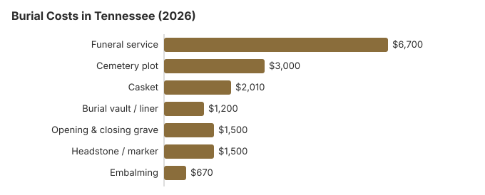

Burial Costs in Tennessee
A complete burial in Tennessee runs about $14,910 to $19,410 in 2026, totaling the rows in this page's table: roughly $6,700 for the funeral service, $3,000 for the plot, $2,010 for a casket, $1,200 for a vault or liner and $1,500 for opening and closing, with $500 to $5,000 more for a headstone. That is below the national picture, and church cemeteries across the state can pull the plot line lower still.
A Tennessee burial arrives as three bills from three businesses: about $6,700 from the funeral home, a plot and interment bill from the cemetery that starts near $3,000, and $500 to $5,000 from whoever makes the headstone.
Complete Burial and Average Funeral Cost Breakdown
This table breaks Tennessee burial costs into line items. Our estimate for the funeral service itself is about $6,700, roughly $1,600 below NFDA’s $8,300 national median for a funeral with viewing and burial, and the cemetery rows below add the rest.
| Burial charge | Estimated Tennessee cost | Low-high |
|---|---|---|
| Funeral service | $6,700 | $5,025 – $8,710 |
| Cemetery plot | $3,000 | $1,500 – $6,000 |
| Casket | $2,010 | $670 – $5,360 |
| Burial vault / liner | $1,200 | $800 – $10,000 |
| Opening & closing grave | $1,500 | $500 – $3,000 |
| Headstone / marker | $1,500 | $500 – $5,000+ |
| Embalming | $670 | $500 – $1,500 |
Our numbers, not a survey: we estimated these Tennessee prices ourselves rather than polling Tennessee cemeteries, so they are for planning, not a quote or advice. Read how the estimates are made and the caveats in our disclaimer.

The funeral service line is a bundled package; the basic services fee inside it, which a family cannot decline, had a national median of $2,495 in the NFDA 2023 General Price List Study. Our Tennessee plot estimate is about $3,000, within a $1,500 to $6,000 range, and a church or family cemetery can come in lower. Casket estimates run from about $670 to $5,360, and the FTC Funeral Rule lets you buy one from any seller without paying the funeral home a handling fee. The total cost of burial in Tennessee, including all cemetery fees, typically ranges from $14,910 to $19,410 depending on geographic location and the funeral goods selected, and families can use a funeral cost calculator to compare cremation, burial, and service prices by state when planning.
Burial and Direct Cremation Options in Tennessee
- The NFDA 2023 General Price List Study puts the national median for a funeral with viewing and burial at $8,300, or $9,995 with a vault, and a funeral with viewing and cremation at $6,280; Tennessee funeral homes set their own prices around those benchmarks.
- Learn about green burial
- Direct cremation: Simple cremation without embalming or a viewing, though families can still choose a traditional service later. Cremation is generally more affordable than traditional burials. In Tennessee, direct cremation prices vary by provider, so compare each General Price List against the national NFDA 2023 direct-cremation median of $2,645 with a family-supplied container. Our Tennessee estimate is about $1,600 (see the Tennessee cremation guide). Tennessee’s cremation rate, rounded to about 42% on this site, still trails the 63.4% national rate NFDA projected for 2025, so burial remains the more common choice here.
Where a Tennessee Family Can Save
Tennessee burial bills come down with some planning, especially for families facing funeral costs without insurance coverage:
- Request each cemetery's price sheet: the FTC Funeral Rule does not cover most cemeteries, but Tennessee cemeteries registered with the state will usually hand one over when asked.
- If pricing rules aren't followed: You can file a complaint with the Tennessee Board of Funeral Directors and Embalmers (615-741-5062) if a funeral home does not provide required pricing disclosures or a written statement to provide describing the funeral goods and services selected, including any legal or other requirements.
- Ask country churches about lots: congregation and family cemeteries are common in rural Tennessee and often price a grave at 30-50% below a commercial memorial park.
- State veterans cemeteries: besides the national cemeteries, Tennessee runs five state veterans cemeteries (two East Tennessee sites in Knoxville, Middle Tennessee in Nashville, West Tennessee in Memphis, and Parkers Crossroads), where an eligible veteran’s grave costs the family nothing (VA National Cemetery Administration).
- In some regions, families may weigh this against direct cremation and other affordable cremation options depending on local pricing.
- Ask about natural burial: it skips embalming and the vault, two rows in the table above (about $670 and $1,200 here), though not every Tennessee cemetery permits it. Our green burial options guide explains what to ask.
- Budget for paperwork: A certified death certificate from the Tennessee Office of Vital Records costs $15 per copy (Tennessee Department of Health fees), and families often need several copies for banks, insurance, and estate matters. Some families also seek financial help to cover funeral costs.
How Tennessee Burial Compares With the Region
In much of Tennessee, family and church cemeteries still operate alongside commercial ones, and many congregations keep section pricing below market. If your family already owns a church or family plot, using it removes the plot row, which our table puts at about $3,000, though you will still pay for opening and closing (about $1,500 here) and usually a vault or liner. Veterans have a no-cost option too: burial at Chattanooga or Mountain Home National Cemetery includes the grave, opening and closing, and a government headstone, while Knoxville and Memphis national cemeteries now accept cremated remains only.
Burial Resources
- Funeral Consumers AllianceNonprofit consumer advocacy for funeral pricing
- Headstone & Monument GuideCosts, types, and buying tips
- Green Burial OptionsEco-friendly and natural alternatives
- Best Online Casket RetailersCaskets bought online often cost less
- Best Burial InsuranceCompare plans to cover burial expenses
Compare Funeral Costs
- Average Funeral Cost in 2026National cost breakdown with real prices
- Cremation vs. Burial Cost ComparisonSide-by-side price comparison to help you decide
- Funeral Cost BreakdownEvery line item explained: know what you're paying for
- Cheapest Funeral OptionsLower-cost alternatives, with typical price ranges
- Direct Cremation: Most Affordable OptionNFDA 2023 median $2,645 with a family-supplied container (latest available)
- How to Compare Funeral PricesStep-by-step guide to getting the best price
Tennessee families are free to buy the casket and marker from outside sellers. What they typically cost is in our online casket retailer guide and headstone cost guide; if the bill is still too high, our payment assistance guide covers where to look for help.
Tennessee Burial Questions
What is the full price of burial in Tennessee?
A full burial in Tennessee comes in at about $6,700 for the service charge, which typically covers basic services from the funeral director and staff plus a proportionate share of overhead costs, $3,000 for the cemetery plot, $2,010 for a casket, $1,200 for a vault, $1,500 for opening and closing, and $500-$5,000 for a headstone. Totals generally land between $14,910 and $19,410 depending on choices, and extras like a funeral ceremony or graveside service can raise the total.
Are burial vaults mandatory in Tennessee?
Some cemeteries require an outer burial container, which may be a vault or a less expensive grave liner, to keep the ground stable over time. A liner is usually an acceptable substitute; always ask the specific Tennessee cemetery for their written policy.
Which Tennessee burial costs the least?
A Tennessee funeral home's cheapest burial is normally direct burial, which drops embalming, the viewing and the ceremony; the General Price List has to show what it costs. Direct cremation, estimated at about $1,600 here, costs less still. The remains may still need transportation to the funeral home, cemetery, or crematory, so ask what is included before you pay. FEMA can help with funeral costs after a federally declared disaster, the county may handle indigent burial when there is no money at all, eligible veterans may receive VA burial benefits, and a qualifying spouse or child may receive the one-time $255 Social Security payment.
What is the best way to shop cemeteries in Tennessee?
Each Tennessee cemetery sets its own prices for the lot, the opening and closing and the vault, so get a written list from every one you consider. The FTC Funeral Rule binds funeral homes, not most cemeteries, which means a Tennessee cemetery may not be obliged to itemize; ask anyway. Chattanooga National Cemetery and Mountain Home National Cemetery take casket burials, while Knoxville National Cemetery accepts cremated remains only.
How can you plan funeral arrangements in Tennessee ahead of time?
Pre-planned funeral arrangements are called preneed contracts in Tennessee, and the funds are generally held in trust accounts. A Totten Trust is another way to set aside money to pay funeral costs. If you are applying for TennCare (Tennessee Medicaid), a burial trust you set up yourself is excluded from your resources when it holds no more than $6,000, and interest that later pushes it past $6,000 stays excluded; a trust funded above $6,000 is reviewed under the regular trust rules (TennCare trust policy). Writing down final wishes can make things easier for family, and arrangements should be reviewed and updated over time.
What is an all-in burial estimate for Tennessee?
Adding every line item, burial in Tennessee usually totals $14,910 to $19,410: funeral service about $6,700, plot about $3,000, casket about $2,010, vault about $1,200, opening-and-closing about $1,500, and headstone $500-$5,000.
Is green burial available in Tennessee?
Yes. Larkspur Conservation at Taylor Hollow in Westmoreland, Sumner County, is Tennessee's first conservation burial ground. Its 112 acres are protected by a conservation easement held by The Nature Conservancy, and burials there take place without embalming or a vault (Conservation Burial Alliance).
Conventional Tennessee cemeteries may still require a vault, so ask about it before you buy a plot. Under the FTC Funeral Rule, a Tennessee funeral home cannot charge for embalming you did not approve unless state law requires it, so ask about refrigeration before a natural burial.
More for Tennessee
What Tennessee law makes cemeteries set aside, and death certificate costs
Part of what you pay a Tennessee cemetery for a plot is required by law to go into a permanent trust for upkeep. Under Tenn. Code Ann. § 46-1-204, every cemetery company must deposit, within 30 days after the month the final payment is made, the greater of $1 per square foot or 20 percent of the price of an in-ground lot; 20 percent of the land price or $50, whichever is greater, for a lawn crypt; and at least 10 percent of the price of a mausoleum crypt or niche. Money paid for special care of a grave goes into the trust in full. The same section caps the memorial care fee a cemetery can charge when it installs a marker at 75 cents per square inch of ground the marker covers (the cemetery may raise that cap each year by no more than the change in the consumer price index), bars it from charging more than its installation fee, and forbids charging a different fee because the marker was bought elsewhere. A 24-by-12-inch flat marker covers 288 square inches, so at the base rate the care fee on it tops out at $216. The Tennessee Department of Commerce and Insurance oversees these trusts.
Certified death certificates cost $15 each in Tennessee, for the first and every additional copy (Tennessee Office of Vital Records, checked October 29, 2026). Any county health department can now issue a certificate for a death registered anywhere in the state, so a family in Jackson or Johnson City does not have to deal with the Nashville office. VitalChek handles online orders and adds its own fee. Five copies cost $75.
Who regulates a Tennessee burial, and where to get help
Funeral homes in Tennessee answer to the Board of Funeral Directors and Embalmers (615-741-5062), which takes license checks and complaints. Cemetery trust deposits are overseen by the Department of Commerce and Insurance, as described above, so a problem with a plot purchase may belong there instead.
The Funeral Consumers Alliance does not include Tennessee among the nine states requiring a funeral director, so Tennessee families may handle a burial themselves once they hold the burial permit, as long as the cemetery's grave rules are met.
Tennessee sets no cremation waiting period, though cremation needs its own permit (Tenn. Code Ann. 62-5-504); none of that delays a burial.
When the family cannot pay
County help with a pauper burial in Tennessee is optional, not guaranteed: the county legislative body may set aside money for the burial or cremation of a poor person who dies in the county (Tenn. Code Ann. § 5-9-101(4)). The $255 Social Security lump sum goes to a surviving spouse or child who applies within two years (never to the cemetery), and it covers little of the $3,000 Tennessee plot estimate on this page.
Veterans
A national cemetery grave, opening and closing, liner and headstone cost an eligible veteran's family nothing. Tennessee has five national cemeteries, but only Chattanooga (423-855-6590) and Mountain Home (423-979-3535) still take casket burials; Knoxville (423-979-3535), Memphis (901-386-8311) and Nashville (615-860-0086) accept cremated remains only. The state's four veterans cemeteries take casket burials: East Tennessee in Knoxville (865-577-3228), Middle Tennessee in Nashville (615-532-2238), West Tennessee in Memphis (901-543-7005) and Parkers Crossroads (731-967-4127) (source: VA National Cemetery Administration). National cemetery graves are booked through the VA's National Cemetery Scheduling Office, 800-535-1117.
Before you sign anything in Tennessee
- Get separate prices from the cemetery for the plot, opening and closing, vault or liner and marker.
- Ask whether the cemetery requires an outer burial container, and check its marker care fee against the § 46-1-204 cap.
- Ask the county mayor’s office whether the county funds pauper burials, and what it covers, before you sign anything.
- For a casket burial of a veteran, compare Chattanooga, Mountain Home and the state veterans cemeteries.
- If a funeral home quotes burial prices that turn out wrong, complain to the board at 615-741-5062.